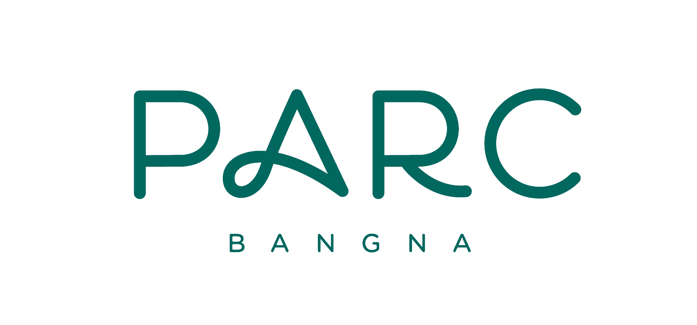

01 · ความไว้ใจ
ตรวจสองเรื่องที่อาจกระทบความไว้ใจ
ตรวจสุขภาพสนามหญ้าที่ PARC และตรวจข้อกล่าวหาเรื่องการถ่ายภาพลูกค้าที่ La Salle's Avenue ให้ชัดก่อนนำไปพูดต่อ

MLA Weekly Report Customer & Competitor Signalsรายงาน 28 วันล่าสุด
สรุปเสียงลูกค้า ความเคลื่อนไหวของคู่แข่ง และเรื่องที่ทีมควรลงมือเช็ก เพื่อให้ทุกเสียงไปถึงคนที่ช่วยแก้ได้ และให้ลูกค้ากับร้านค้ารู้ว่าเราได้ยินและเปลี่ยนอะไรแล้ว
คำตอบสั้น ๆ
01 · ความไว้ใจ
ตรวจสุขภาพสนามหญ้าที่ PARC และตรวจข้อกล่าวหาเรื่องการถ่ายภาพลูกค้าที่ La Salle's Avenue ให้ชัดก่อนนำไปพูดต่อ
02 · มื้อเย็น
ศูนย์เปิดถึง 22:00 แต่บางร้านอาจปิดตั้งแต่ 19:00–20:00 ขณะที่คู่แข่งด้านอาหารบางรายเปิดถึง 23:00 เรื่องนี้กระทบมื้อเย็นโดยตรง
03 · หลักฐาน
เรื่องที่พบมากที่สุดคือที่จอดรถและทางเข้า แต่รีวิวจาก Google ยังเป็นเสียงจากแพลตฟอร์มเดียว ต้องเช็กหน้างานก่อนเปลี่ยนนโยบาย
วงจรฟัง–ทำ–เรียนรู้
ทุกจุดที่ลูกค้าหรือร้านค้าเจอกับ PARC เป็นโอกาสให้เขารู้สึกว่าที่นี่มีชีวิต มีใจ และเข้าใจเขาจริง เสียงที่เราได้รับจึงไม่ควรจบอยู่แค่ในรายงาน
ปลายทางของวงจรนี้ คือให้คนไว้ใจ PARC Bangna เป็นที่ประจำ—สงบ เป็นส่วนตัว และช่วยให้ชีวิตประจำวันง่ายกว่าที่คาด จนเป็นที่แรกที่นึกถึงเมื่อต้องการกิน พัก ดูแลตัวเอง หรือพาครอบครัวมา
เก็บทั้งคำชม ข้อติดขัด และสิ่งที่ร้านเห็นหน้างาน โดยตัดข้อมูลส่วนตัวที่ไม่จำเป็นออก
แยกข้อเท็จจริงออกจากเรื่องที่ยังต้องตรวจ แล้วระบุเจ้าของงานและวันที่จะกลับมาเช็กผล
ช่วยให้ลูกค้าทำภารกิจเดียวกันได้ง่ายขึ้น โดยยังเลือกเส้นทางและจังหวะของตัวเองได้
ดูว่าลูกค้าสะดวกและสบายใจขึ้นไหม และร้านได้รับการส่งต่อที่เหมาะสมโดยไม่กดดันลูกค้าหรือไม่
บอกลูกค้าและร้านค้าว่าเราได้ยินอะไร เปลี่ยนอะไร และยังไม่รู้อะไร แล้วชวนช่วยกันทำให้ครั้งต่อไปดีขึ้น
ทุกเรื่องต้องมีเจ้าของงาน วันเช็กผล และสิ่งที่ลูกค้าควรได้รับ ใช้ข้อมูลเท่าที่จำเป็น ไม่เปิดเผยตัวบุคคล และไม่อ้างเกินหลักฐาน
เสียงลูกค้าจริง
ข้อความสั้นตามที่แพลตฟอร์มแสดง ณ วันที่เก็บ รีวิวหนึ่งรายการคือเบาะแสให้ลงมือเช็ก ไม่ใช่ข้อสรุปแทนลูกค้าทั้งหมด
รีวิวที่เกิดขึ้นจริง · 28 วันล่าสุด
เทียบสองช่วง
ประเด็นที่พบ
กดแต่ละประเด็นเพื่อเปิดดูข้อสังเกตและแหล่งต้นทางที่อยู่ข้างใต้
ตัวเลขนี้คือจำนวนข้อสังเกตที่บันทึกไว้ ไม่ใช่จำนวนลูกค้า และไม่ใช่สัดส่วนของปัญหาทั้งหมด
12 ช่วงย้อนหลัง · เก็บจาก Google Maps 3 ส.ค. 2569
กราฟนับรีวิวที่เราเห็นเมื่อเรียง “ใหม่สุด” แล้วแบ่งตามคำบอกเวลาของ Google เช่น “2 เดือนก่อน” จึงใช้มองจังหวะขึ้น–ลงได้ แต่ห้ามอ่านเป็นยอดรายเดือนที่ Google รายงาน
ต้องทำทันที
ยอดรีวิวสะสม
ตัวเลขนี้ช่วยให้เห็นว่าแต่ละสถานที่มีรีวิวสะสมมากน้อยเพียงใด เพื่อรู้ว่าฐานที่นำมาเทียบต่างกันแค่ไหน แต่ไม่ได้บอกว่าเดือนนี้โตเร็วหรือช้า
ใช้ดูได้: แต่ละสถานที่มีรีวิวสะสมมากน้อยเพียงใด เพื่อรู้ว่าฐานที่นำมาเทียบต่างกันแค่ไหน
อย่าใช้สรุป: ว่าใครกำลังโตเร็วหรือบริการดีกว่า จนกว่าเราจะเก็บยอดจากหลายวันต่อเนื่อง
ร้านของเรา
ดูรายร้าน
| ร้าน | คะแนน | รีวิวทั้งหมด | รีวิวที่อ่านได้ | ตรวจชื่อร้านจาก |
|---|
คะแนน Google และจำนวนรีวิวเก็บเมื่อ 2 ส.ค. 2569 ชุดส่งต่อเดิมมี 202 แถว เมื่อตัดแถวซ้ำ คำตอบเจ้าของร้าน และรายการที่ไม่ควรแสดงสาธารณะ หน้าเว็บเปิดอ่านได้ 183 รายการ เราเก็บเสียงของ Kinroll เพิ่มอีก 10 รายการเมื่อ 3 ส.ค. 2569 จึงเปิดอ่านได้รวม 193 รายการจาก 25 ร้าน ทั้งหมดเป็นตัวอย่างล่าสุด ไม่ใช่สัดส่วนของลูกค้าทั้งหมด
แผนที่จริงรอบ PARC
ทีมกลยุทธ์และดูแลร้านค้าใช้ดูระยะและทิศทางบนถนนจริง ส่วนทีมแบรนด์และปฏิบัติการเปิดคะแนน รีวิว และหลักฐานก่อนนำบทเรียนมาปรับกับ PARC
ถนนและพื้นที่มาจาก OpenStreetMap ผ่าน OpenFreeMap ส่วนหมุดวางตรงพิกัดที่ผ่านการตรวจ ณ วันที่เก็บข้อมูล ไม่มีการเลื่อนหมุดเพื่อความสวยงาม ปุ่มลูกบาศก์เพียงเอียงมุมมองเพื่ออ่านบริบท ไม่ใช่แบบจำลองอาคาร แผนที่นี้ยังใช้แทนทางเข้า การนำทาง เวลาเดินทาง ขอบเขตพื้นที่บริการ หรือถิ่นที่อยู่ลูกค้าไม่ได้
แยกตามสถานที่
ข้อมูลพื้นฐาน
| สถานที่ | ประเภท | คะแนน | จำนวนรีวิว | ปิด |
|---|
คะแนนและจำนวนรีวิวเป็นภาพ ณ วันที่เก็บข้อมูล ใช้ดูบริบทเท่านั้น ไม่ควรเอาสถานที่ต่างประเภทหรือต่างอายุมาเทียบตรง ๆ
ข้อสังเกตทั้ง 75 รายการผ่านการตรวจและเลือกใช้ภายในแล้ว
หมายถึงมีหลักฐานให้ย้อนดู ไม่ได้แปลว่าข้อกล่าวหาทุกข้อเป็นจริง เรื่องสุขภาพ ความปลอดภัย และ PDPA ยังต้องตรวจหน้างาน
หลายรีวิวใน Google ยังเป็นแพลตฟอร์มเดียว
จำนวนคนที่พูดซ้ำช่วยชี้จุดที่ควรตรวจ แต่ยังใช้แทนผลสำรวจลูกค้าทั้งหมดไม่ได้
Google บอกเวลาแบบประมาณ เช่น “1 เดือนก่อน”
เราจึงเก็บเป็นช่วงวันที่ ไม่แต่งให้เป็นวันเดียว วันที่นำเข้า MLA ใช้ดูว่าข้อมูลสดแค่ไหน ส่วน “Edited … ago” ไม่นับเป็นรีวิวใหม่
เราอ่านรีวิวที่มีข้อความสูงสุด 10 รายการต่อร้าน
ตัวเลข 28 วันจึงใช้ดูว่ามีเสียงใหม่อะไรเข้ามา ไม่ใช่อัตราโตของรีวิวทั้งหมด และใช้บอกสัดส่วนของปัญหาไม่ได้
กิจกรรมหรือเส้นทางต้องมีอย่างน้อยสองร้าน
และต้องเช็กว่าเวลาทำการของทั้งสองร้านทับกันจริงก่อนเริ่มทดลอง
ข้อมูลพื้นที่เป็นเพียงสมมติฐานตั้งต้น
22 พื้นที่ที่เลือกไม่ใช่ที่อยู่จริงของลูกค้า และ 806 พื้นที่เป็นเพียงฐานเปรียบเทียบ